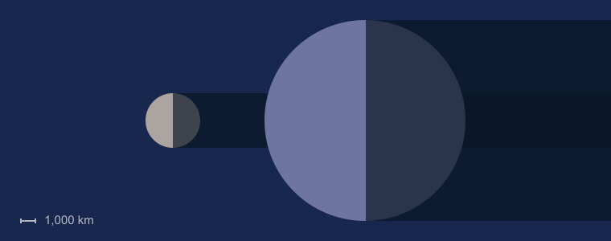

| Equatorial Diameter: | 12,756 km |
| Polar Diameter: | 12,714 km |
| Mass: | 5.97 × 10^24 kg |
| Moons: | 1 (The Moon) |
| Orbit Distance: | 149,598,262 km (1 AU) |
| Orbit Period: | 365.24 days |
| Surface Temperature: | -88 to 58°C |

Facts about the Earth
- The Earth’s rotation is gradually slowing. This deceleration is happening almost imperceptibly, at approximately 17 milliseconds per hundred years, although the rate at which it occurs is not perfectly uniform. This has the effect of lengthening our days, but it happens so slowly that it could be as much as 140 million years before the length of a day will have increased to 25 hours.
- The Earth was once believed to be the centre of the universe. Due to the apparent movements of the Sun and planets in relation to their viewpoint, ancient scientists insisted that the Earth remained static, whilst other celestial bodies travelled in circular orbits around it. Eventually, the view that the Sun was at the centre of the universe was postulated by Copernicus, though this is also not the case.
- Earth has a powerful magnetic field. This phenomenon is caused by the nickel-iron core of the planet, coupled with its rapid rotation. This field protects the Earth from the effects of solar wind.
- There is only one natural satellite of the planet Earth. As a percentage of the size of the body it orbits, the Moon is the largest satellite of any planet in our solar system. In real terms, however, it is only the fifth largest natural satellite.
- Earth is the only planet not named after a god. The other seven planets in our solar system are all named after Roman gods or goddesses. Although only Mercury, Venus, Mars, Jupiter and Saturn were named during ancient times, because they were visible to the naked eye, the Roman method of naming planets was retained after the discovery of Uranus and Neptune.
- The Earth is the densest planet in the Solar System. This varies according to the part of the planet; for example, the metallic core is denser than the crust. The average density of the Earth is approximately 5.52 grams per cubic centimetre.
Earth Diagrams

Facts from Leo:
-70% of the Earth’s surface is covered in water When astronauts first went into the space, they looked back at the Earth with human eyes for the first time, and called our home the Blue Planet. And it’s no surprise. 70% of our planet is covered with oceans. The remaining 30% is the solid ground, rising above sea level.
-Earth is mostly iron, oxygen and silicon If you could separate the Earth out into piles of material, you’d get 32.1 % iron, 30.1% oxygen, 15.1% silicon, and 13.9% magnesium. Of course, most of this iron is actually down at the core of the Earth. If you could actually get down and sample the core, it would be 88% iron. 47% of the Earth’s crust consists of oxygen.
-Earth doesn’t take 24 hours to rotate on its axis It’s actually 23 hours, 56 minutes and 4 seconds. This is the amount of time it takes for the Earth to completely rotate around its axis; astronomers call this a sidereal day. Now wait a second, that means a day is 4 minutes shorter than we think it is. You’d think that time would add up, day by day, and within a few months, day would be night, and night would be day.
-A year on Earth isn’t 365 days It’s actually 365.2564 days. It’s this extra .2564 days that creates the need for leap years. That’s why we tack on an extra day in February every year divisible by 4 – 2004, 2008, etc – unless it’s divisible by 100 (1900, 2100, etc)… unless it’s divisible by 400 (1600, 2000, etc).
-Earth has 1 moon and 2 co-orbital satellites As you’re probably aware, Earth has 1 moon (The Moon). But did you know there are 2 additional asteroids locked into a co-orbital orbits with Earth? They’re called 3753 Cruithne and 2002 AA29. We won’t go into too much detail about the Moon, I’m sure you’ve heard all about it.
3753 Cruithne is 5 km across, and sometimes called Earth’s second moon. It doesn’t actually orbit the Earth, but has a synchronized orbit with our home planet. It has an orbit that makes it look like it’s following the Earth in orbit, but it’s actually following its own, distinct path around the Sun.
2002 AA29 is only 60 meters across, and makes a horseshoe orbit around the Earth that brings it close to the planet every 95 years. In about 600 years, it will appear to circle Earth in a quasi-satellite orbit. Scientists have suggested that it might make a good target for a space exploration mission.
-The Earth is not actually round in shape; in fact it is geoid. This simply means that the rounded shape has a slight bulge towards the equator. So what causes this geoid shape? This happens solely because the rotation of the Earth which causes the bulge around the equator.
-The Earth tilts at roughly 66 degrees.
-Only 3% water of the earth is fresh, rest 97% salted. Of that 3%, over 2% is frozen in ice sheets and glaciers. Means less than 1% fresh water is found in lakes, rivers and underground.
-Asia Continent is covered 30% of the total earth land area, but represent 60% of the world’s population.
-Each winter there are about 1 septillion (1, 000, 000, 000, 000, 000, 000, 000, 000 or a trillion trillion) snow crystals that drop from the sky.